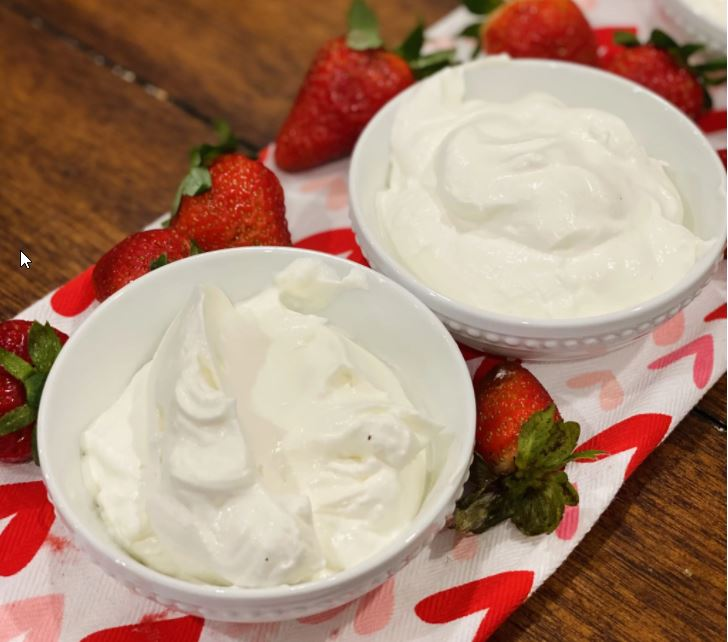

Whipped Cream★ Homemade Whipped Cream
 4
servings
4
servings 5
minutes
5
minutes Vegan
Vegan Sweet
Sweet
Fresh whipped cream.

1 pintheavy cream¼ cupsugar1 tsppure vanilla extract- Pinch of sea salt
In a large bowl, combine the cream, sugar, vanilla, and salt. Beat with an electric mixer on high speed until fluffy and the cream holds a soft peak when you pull the beater out of the bowl.
Use at once or store in a covered container in the refrigerator for up to 30 minutes.